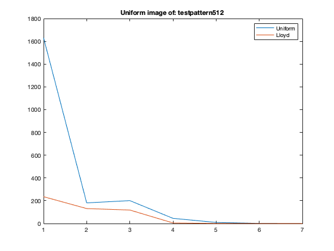
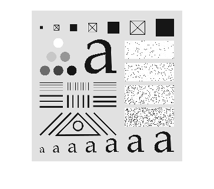

Contents
ECE 253 Homework 5
Shivani Bhakta A13832428 Problem 3 Comparing quantization for images
clear, clc, close all; testpattern512 = imread('testpattern512.tif'); vase = imread('vase.tif'); astronaut = imread('astronaut.tif'); % input_img = testpattern512; % input_img = vase; % input_img = astronaut; % vase = imread(Tiff('vase.tif', 'r')); hw3_b(double(testpattern512), 'testpattern512') % 
figure, histogram(testpattern512), title('testpattern512') %
hw3_b(double(vase), 'vase') %
figure, histogram(vase), title('vase') %
hw3_b(double(astronaut), 'astronaut') %
figure, histogram(astronaut), title('astronaut')
Part(ab)
- As it can be seen in all the images above, Lloyd Max quantization does better than uniform quantization in general. This is expected, because llyod considers the probability distribution of each pixel points and quantize the points based on that distrubution. Basically, if we see the histograms of these images, there are some parts which are densely populated, so for these parts llyod assigns more quantization levels, and for the less dense areas we don't see steps that closer to each other. This makes a use difference and help with the MSE as it can be seen from the MSE plots. This is actually very avidant in testpattern and astronut pictures and mse plots. - Looking at the historgram of vase and it's MSE, we can see that the hist is more uniformly distributed compared to testpattern, and therefore, uniform or llyod are not much different. While the mse plots of other two has some kind of spike where we have the uneven distribution in the histogram. And since uniform doesn't take these densly populated area into consideration, it had the highest mse difference compare to llyod in those regions.
Looking at techinical terms, we satisdfy noth nearest neighbor and centroid conditions in llyod, while only the centroid in uniform quantization.
_Part(c)_
- We see that for the testpattern image, from bit-2 to bit-3 the mse increases for the uniform quantizer. This is probably because of the for bit-2 the quantization levels were probably closer to the dense areas/spike areas, while futher in the other one, leading to increased mse for the latter.
- Although we don't see Lloyd quantizer getting worse for increasing bit rate, it might happen where there is an increase in mse. Let us say, the tie breaking rule for the boundary points, was decided such that it didn't work in the favor of those 'dense/spike' areas. We might still converge but it might not be the best. Also, some initial assumptions could turn up these results.
function [] = hw3_b(input_img, name) mse=[]; for s = 1:7 output_img = Uniform_Quantizer2(uint8(input_img), s); mse(end+1) = immse(output_img, uint8(input_img)); end x=1:1:7; figure, plot(x,mse) hold on; mse_lloyd=[]; for s = 1:7 [N,M] = size(input_img); training_set = reshape(input_img,N*M,1); [partition, codebook] = lloyds(training_set, pow2(s)); lloyd_output = zeros(N,M); for ii = 1:N for jj = 1:M value = input_img(ii,jj); idx = 1; while idx <= length(partition) && value>partition(idx) % when it is outside the bounds idx = idx + 1; end lloyd_output(ii,jj) = codebook(idx); end end lloyd_output = uint8(lloyd_output); mse_lloyd(end+1)= immse(lloyd_output, uint8(input_img)); end plot(x,mse_lloyd) legend("Uniform","Lloyd"), str = sprintf('MSE Values for the image: %s', name); title(str); figure, str = sprintf('Uniform image of: %s ', name); imshow(output_img, [0,256]), title(str); figure, str = sprintf('lloyd image of: %s', name); imshow(lloyd_output, [0,256]), title(str); end
function [output_img] = Uniform_Quantizer2(input_img, s) input_img = uint8(input_img); % Write a function that takes as inputs an 8-bit image and a scalar % s ∈ [1,7] and performs uniform quantization so that the output is % quantized to a s-bit image. output_img = idivide(input_img, pow2(8-s)).*pow2(8-s); %round off output_img = output_img + pow2(8-s-1); end